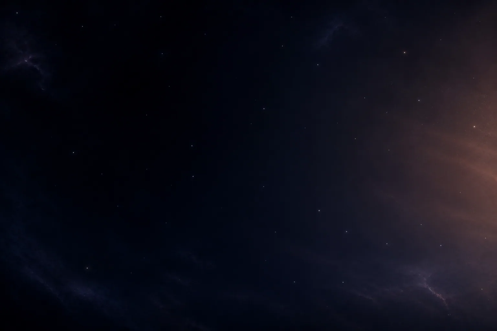
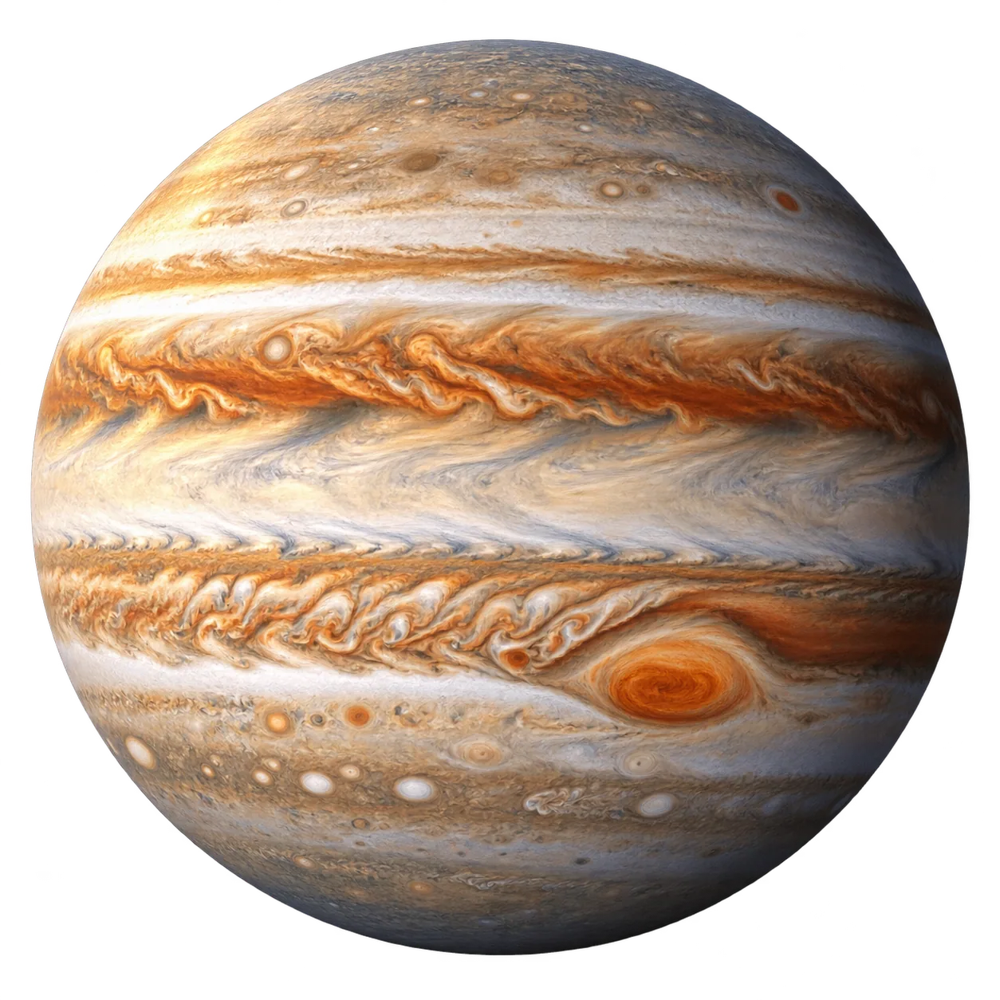
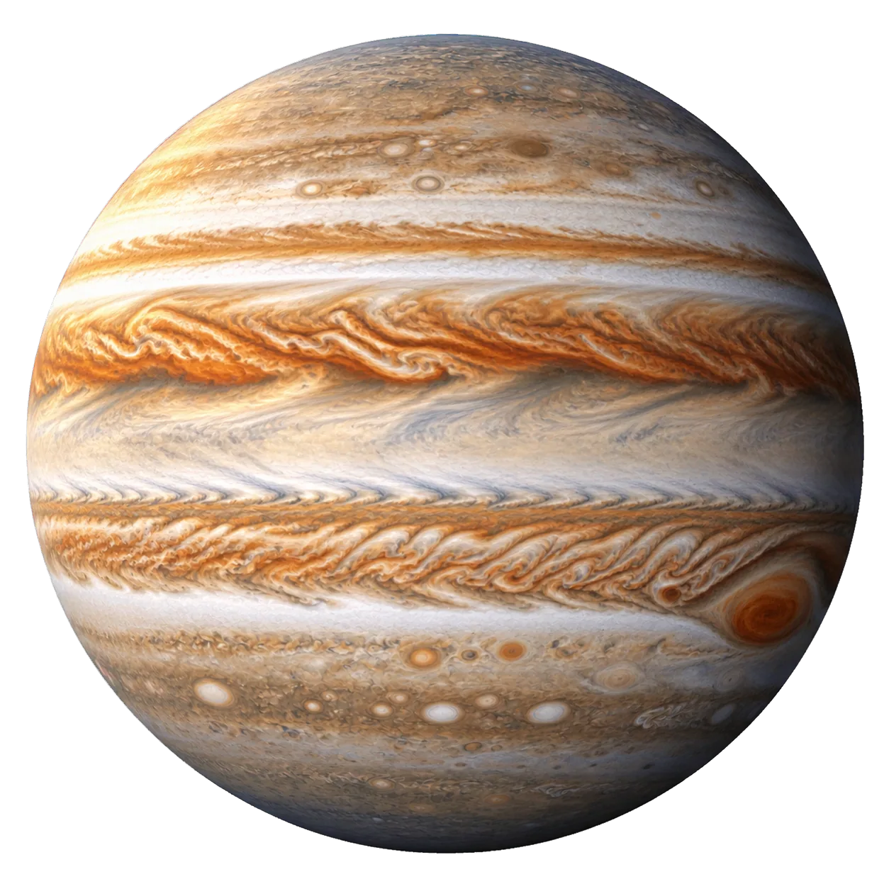
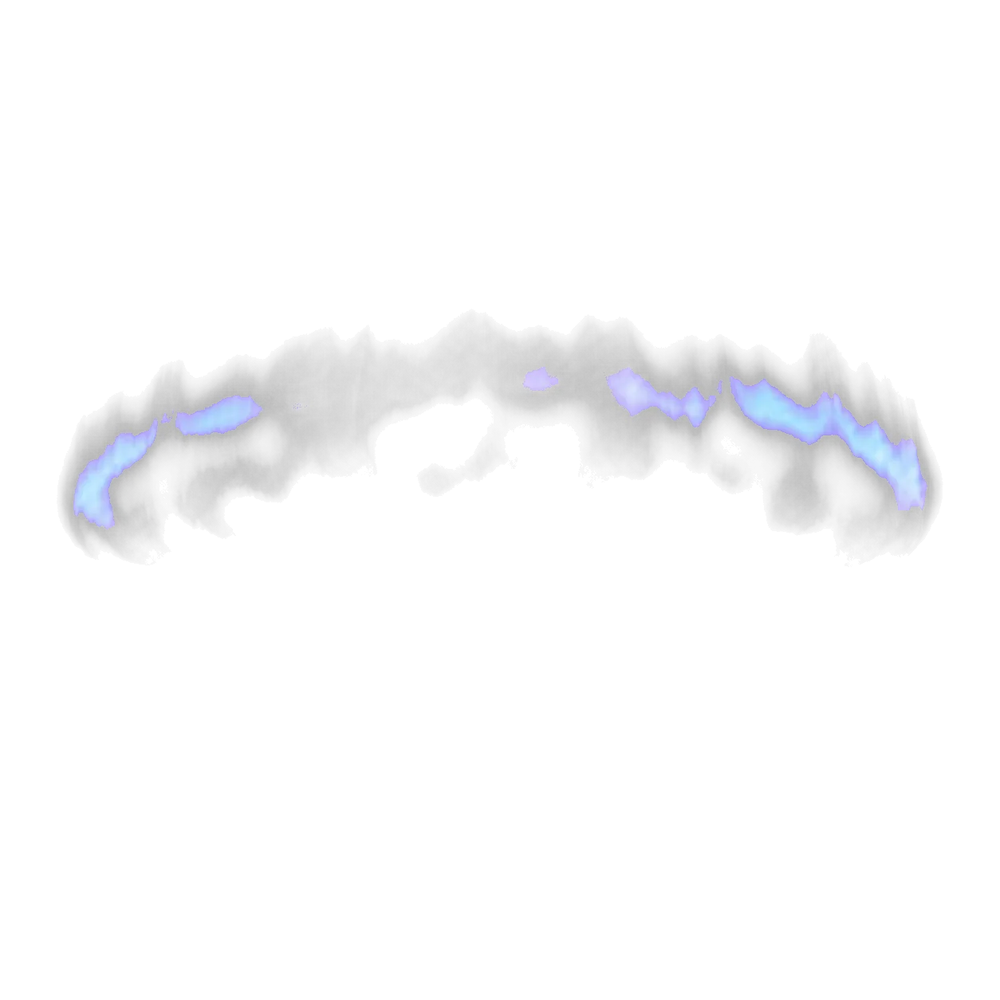
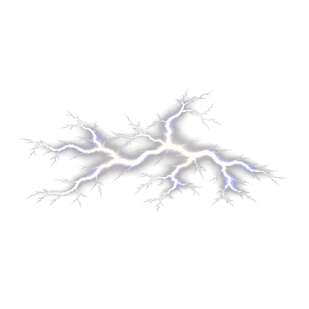
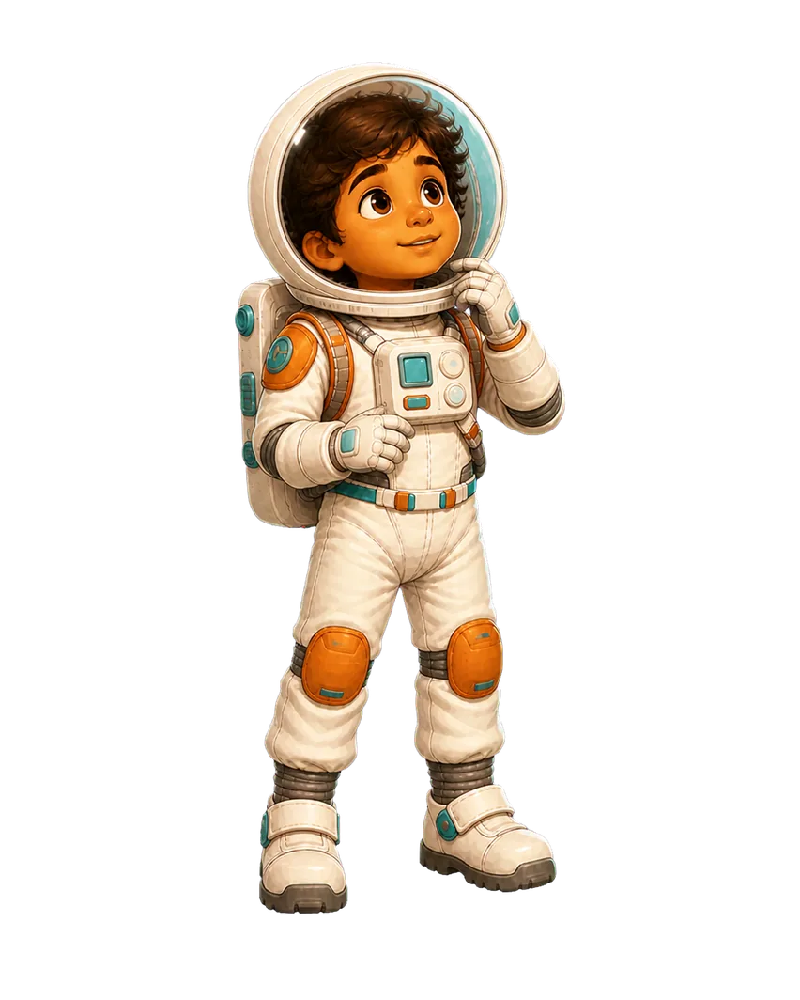
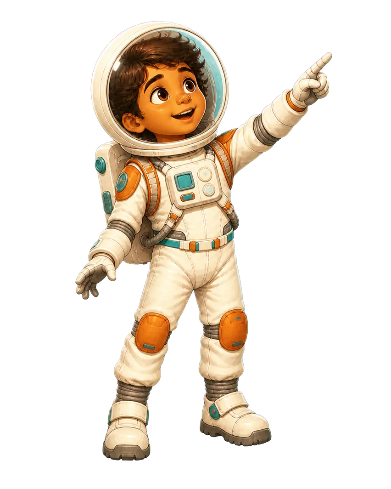
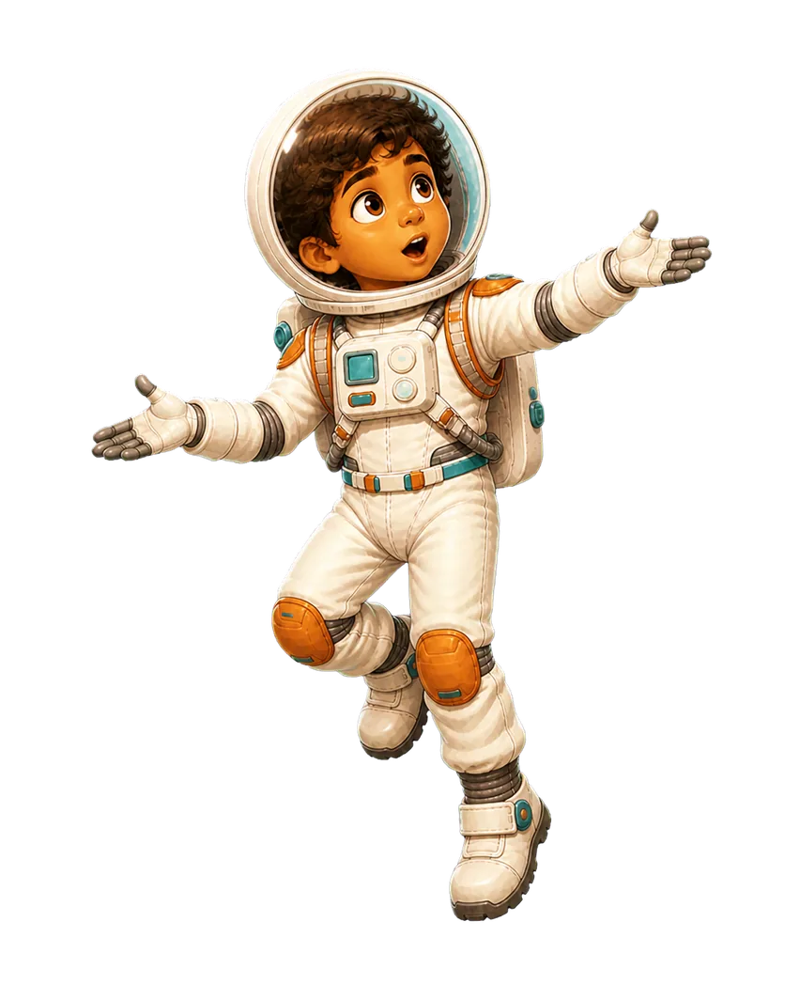
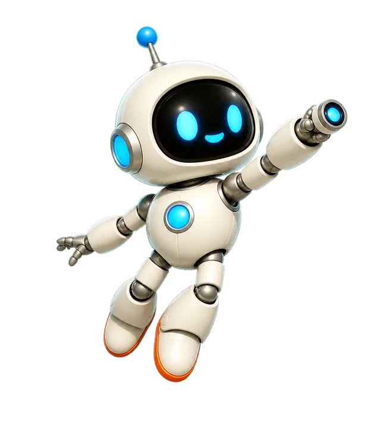

Page 11 · Gas giant
Jupiter
Jupiter is the largest planet. Its bright cloud bands race around a world with the shortest day of any planet.

Jupiter is the largest planet. Its bright cloud bands race around a world with the shortest day of any planet.








Tap the diagram to replay its motion. Illustrations are explanatory.